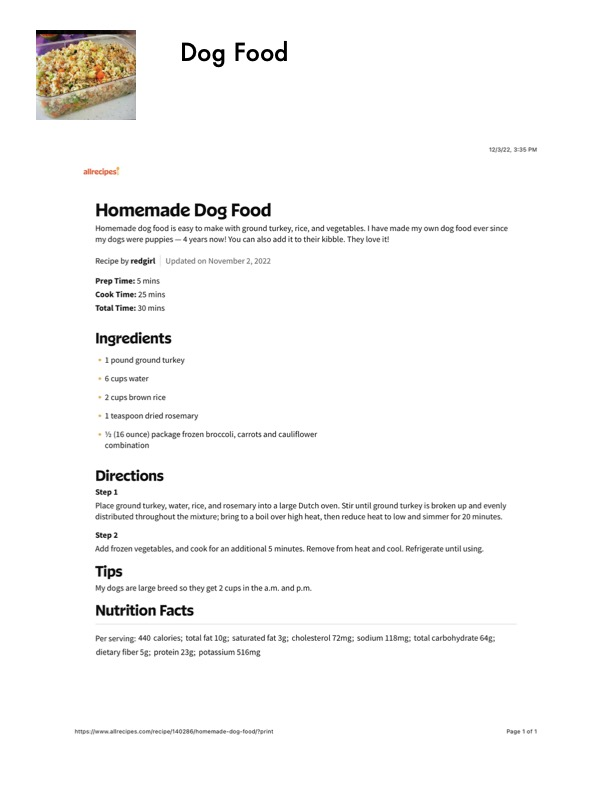

Dog Food

Original cookbook page 384
Ingredients
- * 1 pound ground turkey
- 6 cups water
- * 2. cups brown rice
- * 1 teaspoon dried rosemary
- % (16 ounce) package frozen broccoli, carrots and cauliflower
- combination
Instructions
- Place ground turkey, water, rice, and rosemary into a large Dutch oven. Stir until ground turkey is bro! distributed throughout the mixture; bring to a boil over high heat, then reduce heat to low and simme Step2 Add frozen vegetables, and cook for an additional 5 minutes. Remove from heat and cool. Refrigerate My dogs are large breed so they get 2 cups in the a.m. and p.m. dietary fiber 5g; protein 23g; potassium 516mg https:/imww.allrecipes. com/recipe/140286/homemade-dog-food/?print
Recipe #384 from collection